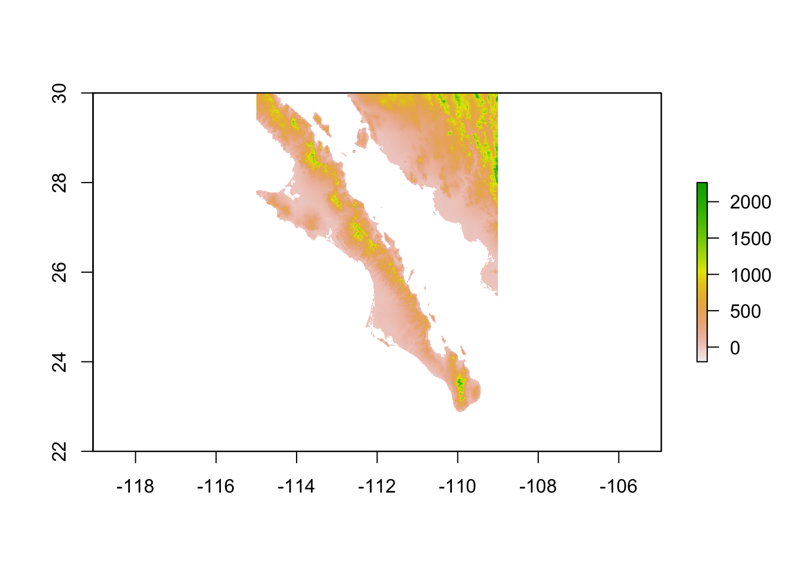
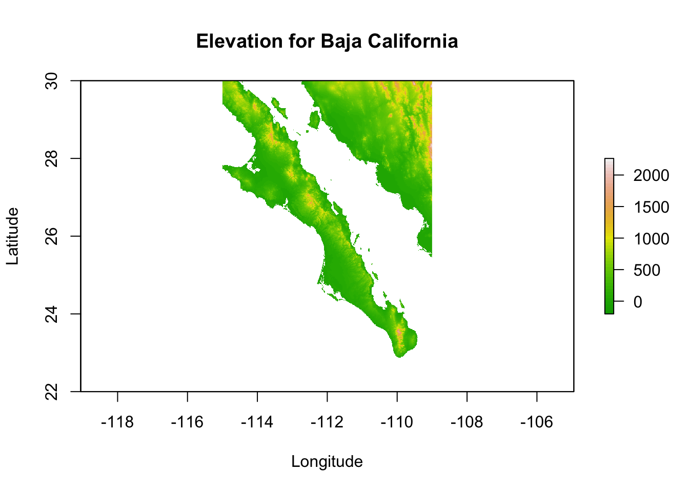
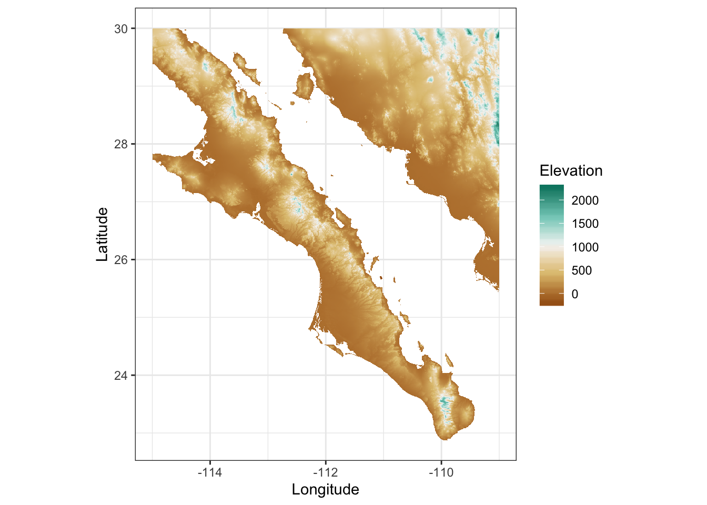

Visualizing Rasters
R.J. Dyer
8/6/2019
Visualizing data contained in a raster is a fundamental task that can be handled by many different conditions. For this example, we will use the Baja California elevation raster.
library(raster)
r <- raster("data/alt_22.tif")
baja_california <- crop(r, extent( c(-115,-109,22,30) ) )
baja_california## class : RasterLayer
## dimensions : 960, 720, 691200 (nrow, ncol, ncell)
## resolution : 0.008333333, 0.008333333 (x, y)
## extent : -115, -109, 22, 30 (xmin, xmax, ymin, ymax)
## crs : +proj=longlat +datum=WGS84 +no_defs +ellps=WGS84 +towgs84=0,0,0
## source : memory
## names : alt_22
## values : -202, 2263 (min, max)Basic Plotting
As part of the built-in object, a raster has the following methods available.
## [1] [ [<- anyNA as.matrix as.raster is.na Ops
## [8] plot print
## see '?methods' for accessing help and source codeof which the plot is the most relevant for this page.

This is the normal plotting functions so we can fancy it up using the normal kind of options to the plot command:
plot( baja_california,
xlab = "Longitude", ylab = "Latitude",
main = "Elevation for Baja California",
col=terrain.colors(50) )
Rasters & ggplot
You can also use ggplot to plot your rasters using geom_tile.
library(ggplot2)
df <- data.frame( rasterToPoints( baja_california ))
names(df) <- c("Longitude","Latitude","Elevation")
p <- ggplot( df ) + geom_tile( aes(x=Longitude,y=Latitude,fill=Elevation))
p <- p + scale_fill_gradientn( colors=c('#a6611a','#dfc27d','#f5f5f5','#80cdc1','#018571'))
p <- p + coord_equal() + xlab("Longitude") + ylab("Latitude")
p
3-Dimensional Visualization
It is also possible to visualize rasters in 3-space. The library rasterVis provides an interface to the rgl library to plot a surface. Once installed, these are easy to use for viewing surfaces. Here is an example using the elevation data we have been playing with.

The zfac option in the plot is the amount to scale the z-axis (elevation) in relation to the x-axis and y-axis dimensions. It is a bit exaggerated at zfac=0.1 but you get the idea.
this is some new stuff